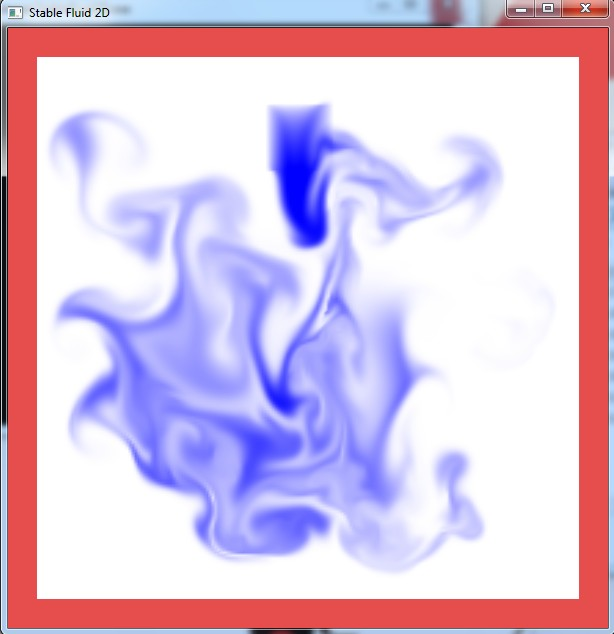
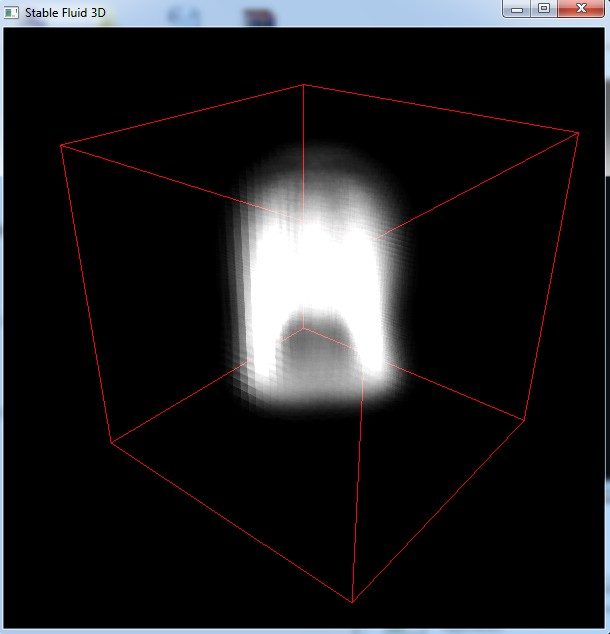
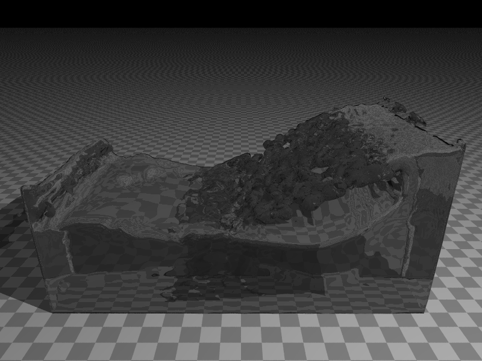
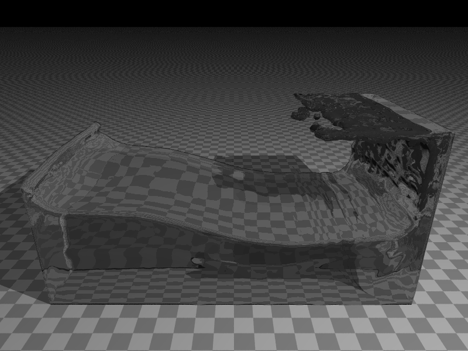
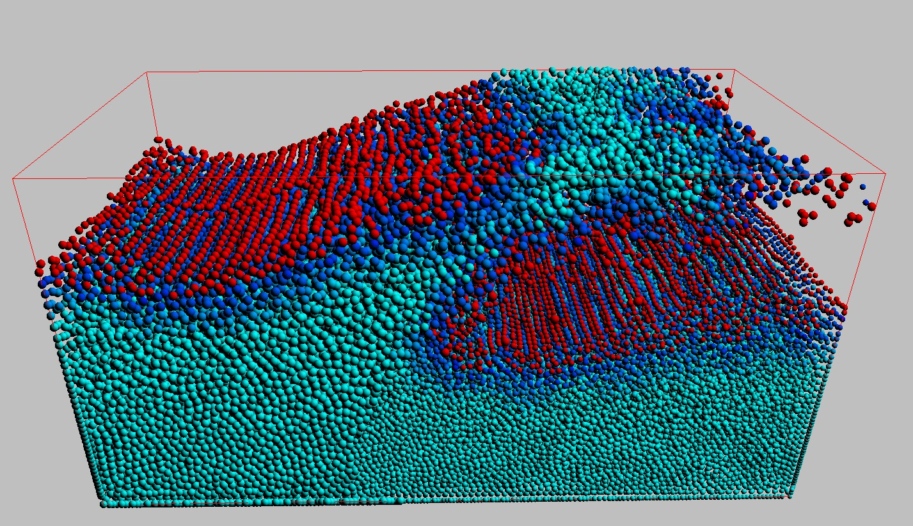
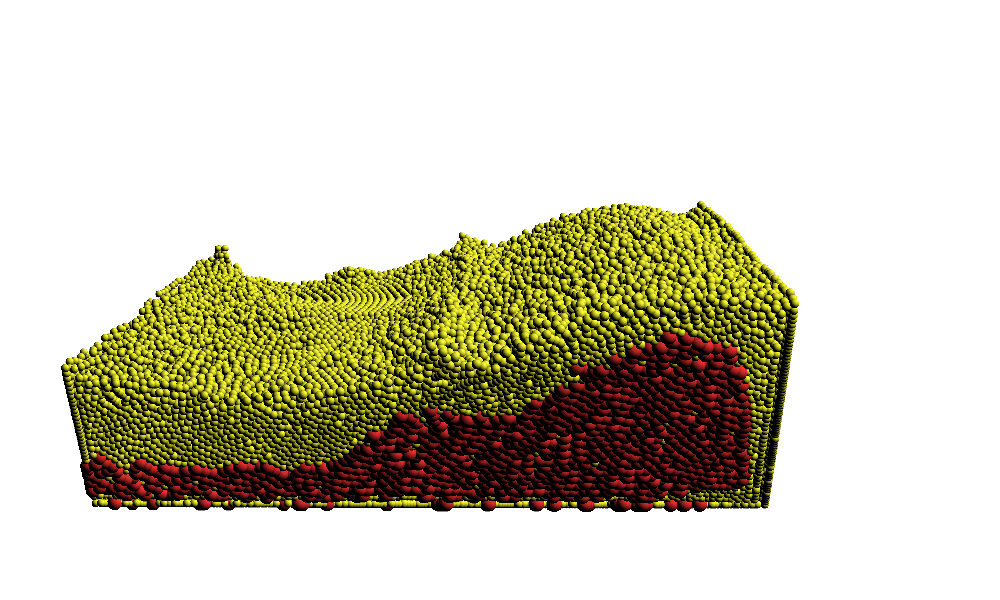

Fluid Simulation
Tech Report:
Stable Fluid Simulation
The implementation of Stable Fluid and Visual Simulation of Smoke
 
Youku
SPH Fluid Simulation
Youku
Youku
Youku
Youku
Source Code: SPH GPU_2D SPH GPU_3D
SPH_CPU_2D SPH CPU_3D
Rendered with Marching Cube
GPU (CUDA) based Adaptive SPH Fluid Simulation
Designed my own way to split and merge particles adaptively (performance is improved by 230%)Technical Report
 
 
Youku
Android Interactive Particle System
Youku